대한민국의 중심지
에버랜드 하이라이트
에버랜드는 T-익스프레스, 롤링 엑스 트레인, 아마존 익스프레스 등
스릴 넘치는 어트랙션과 열정적이고 환상적인 퍼레이드,
아름다운 꽃들이 가득한 낭만
넘치는 정원까지
즐길 것이 너무 많은 국내 최대규모의 테마파크입니다.
에버랜드에서 평생 잊지 못할 즐거운 추억을 만들어 보세요.


TEL
031-320-5000
Suwon Hwaseong Fortress
수원화성 하이라이트
수원화성은 조선의 22대 왕인 정조가 1794년부터 1796년까지
아버지인 장헌세자를 기리기 위해 건립하였으며,
당시 아버지에 대한 생각과 정치적 야망을
담고 있었습니다.
도시를 거닐며 세월의 시험을 견뎌온 성벽을 만져보면
그 시대의 역사가 울려 퍼지는 듯한 느낌이 들고
정조의 효도와 야망을 체험할 수
있습니다.
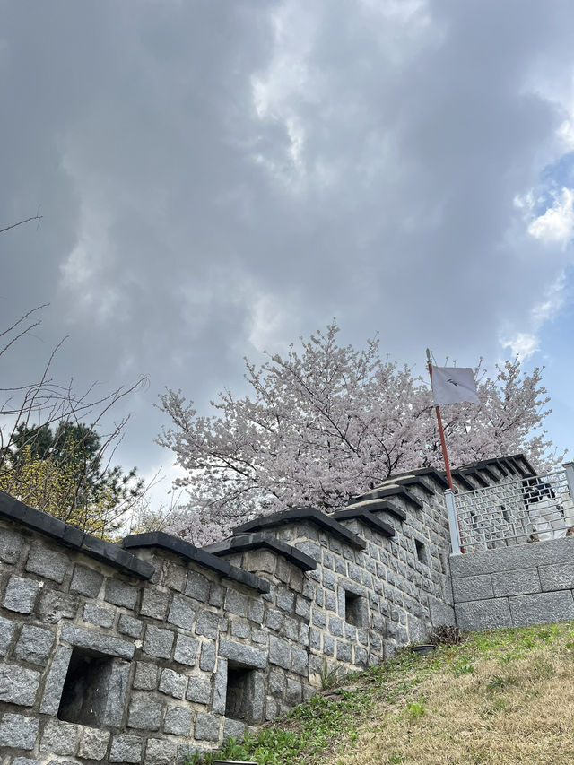
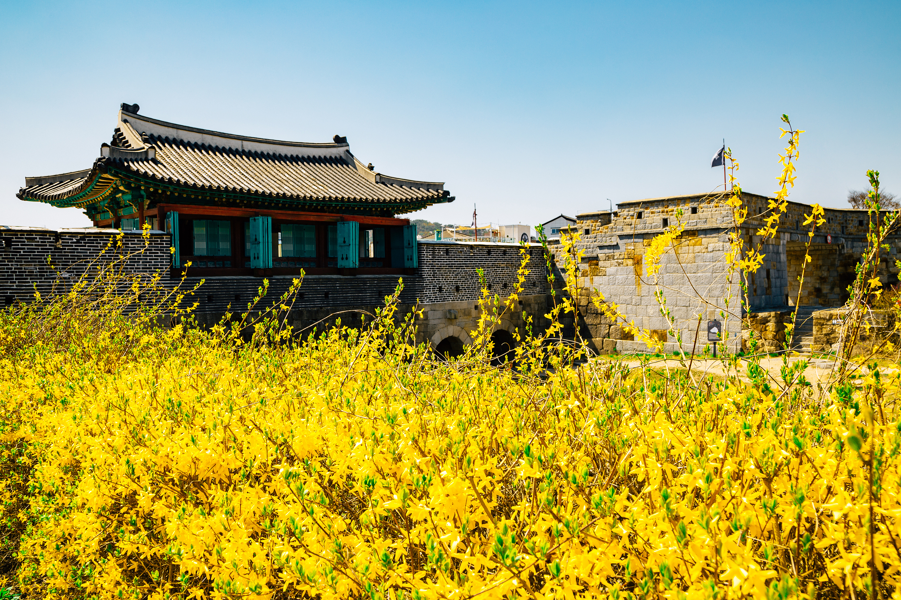

TEL
031-290-3600
Seoul Grand Park
서울대공원 하이라이트
아름다운 식물원과 테마가든에서 자연과 만남
스카이리프트를 타고 서울대공원의 경치를 감상하며 즐거운 데이트
희망과 삶의 활력이 느껴지는
힐링동물원
서울동물원은 서울시 서울대공원 직속 기관으로
1984년 5월 1일 개장 이래
동·식물원 2,420천m² 내 동물원의 기능인
전시,
보전, 교육, 연구에 힘쓰고 있습니다.
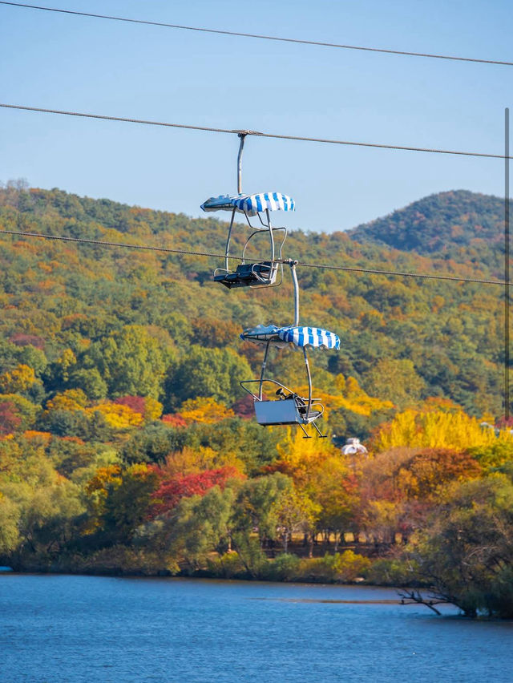


TEL
02-500-7336
경기 지역 특산물
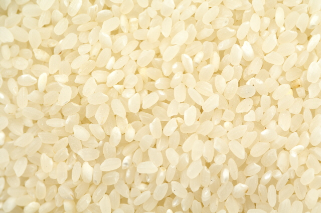
이천, 여주
쌀
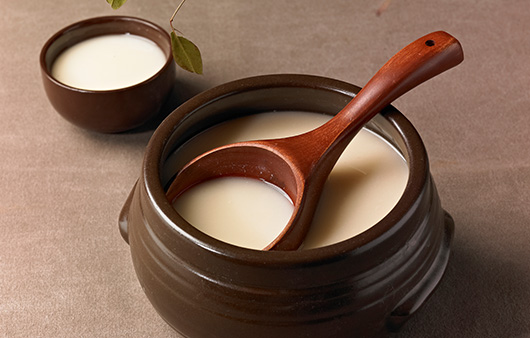
포천
막걸리
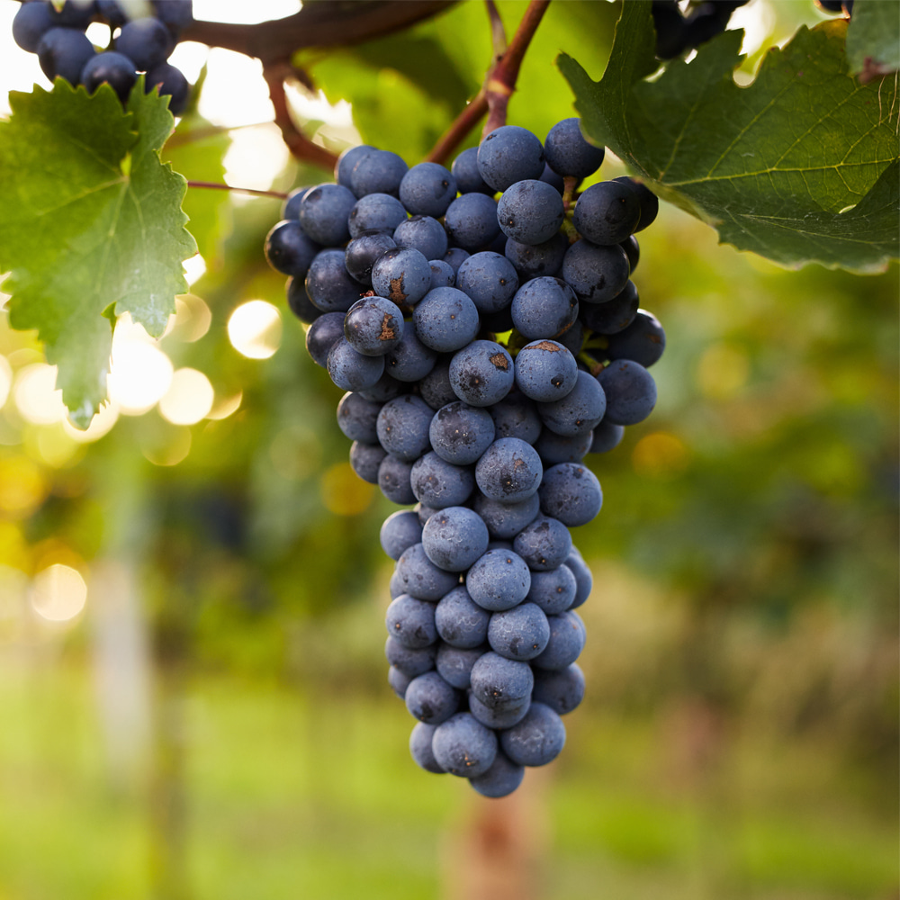
안성
포도
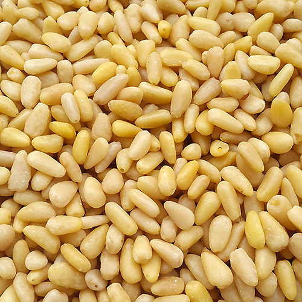
가평
잣
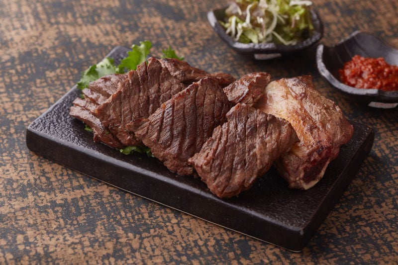
수원
수원갈비

하남, 광주
토마토
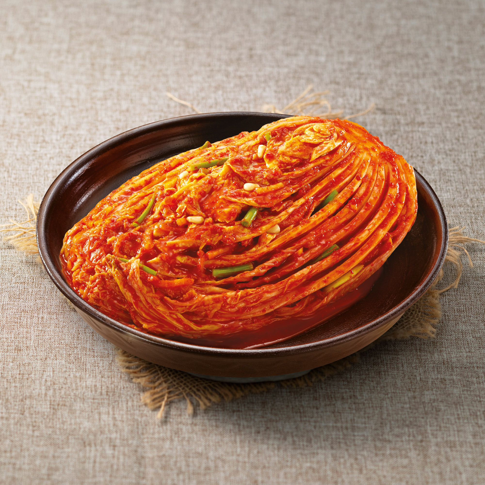
화성
김치
양평
버섯
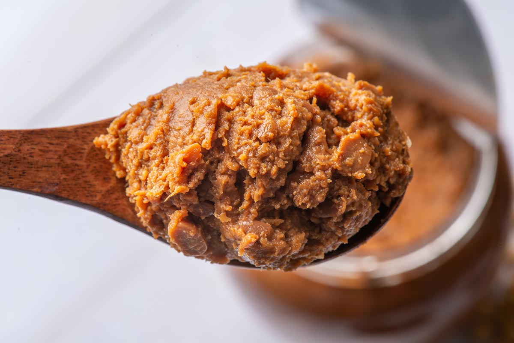
용인
된장
평택
배
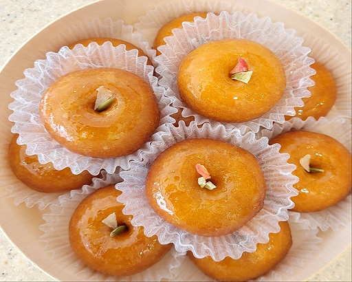
파주
한과
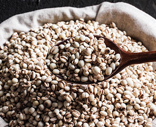
연천
율무
남양주를 빛낸 위인
정약용(丁若鏞, 1762~1836)
다산(茶山) 정약용은 민중의 편에 섰던 선구적인 인문 사상가이며 저술가였다. 그는 약자와 침묵할 수밖에 없는 민초들의 역경에 괴로워하면서 조선 사회를 새롭게 바꾸고자
하였다.
그러나 그는 꿈꾸는 자만은 아니었다. 구체적이고 실천가능한 해결책들을 모색하기 위해, 중국의 예수회 선교사들에 의해 번역된 서양의 책뿐만이 아니라
일본의 서적까지 손에 닿는 모든 것을 읽었다. 이러한 오랜 탐색을 통해 독창적이고 종합적 사유, 공공복지와 정의에 기반한 새로운 사회에 대한 비전이 탄생할 수 있었다.
다산은 르네상스적인 인간이었다. 그의 관심은 놀라울 정도로 다양한 영역과 주제들에 이르렀다. 그는 기술자였고
건축가였으며, 군사전략가였다. 그는 천연두 예방법에 대한 체계적인 글을 썼던 의사였다.
그는 지방 행정가들이 법적인 판단에 활용할 수 있도록 구체적인 사례들을 연구하여 편찬하였던 법학가였다.
그는 2000수가 넘는 감동적인 시를 남긴 시인이면서 음악학자이기도 하였다. 또한 그는 조선의 차문화에 활력을 불어넣은 조선차 연구자이기도 하였다.
그럼에도, 다산의 가장 위대한 업적은 정신적인 것이었다. 카톨릭에 대한 정부의 박해 가운데
카톨릭 신자인 조카사위 황사영(黃嗣永, 1775~1801)의 편지가 발견되어, 그는 한반도 남서쪽 강진으로
유배되었으며, 그곳에서 18년의 삶을 보냈다. 그는 병약하고 아픈 몸을 추슬러가며 새로운 조선에 대한
비전을 글로 옮겼고,우리들에게 수많은 저술을 물려주었다.
정약용은 대체로 ‘다산’으로 애칭되지만, 그는 고향에서 죽기 전까지 “먼 미래를 기다린다”는 뜻을 지닌 ‘사암(俟菴)’이란 호를 좋아하였다.
이 외에도 ‘열수(列水)’ ‘철마산인(鐵馬山人)’ ‘자하도인(紫霞道人)’ 등의 호가 있으며, 당호는 여유당(與猶堂), 시호는 문도(文度)이다.
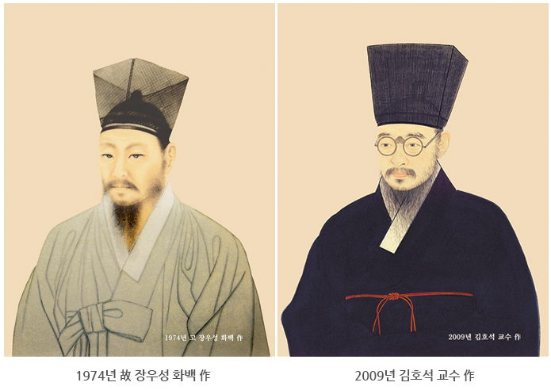
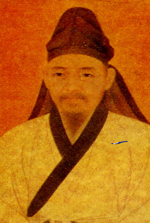
파주를 빛낸 위인
율곡 이이 (栗谷 李珥, 1536~1584)
이이는 조선조 중종 31년 음력 12월 26일에 태어났다. 덕수 이씨로 아버지는 원수, 어머니는 사임당 신씨이다. 자는 숙헌, 호는 율곡, 석담, 우재라 했다.
일생동안 일한 그의 업적과 사상적 특징을 적어보면 다음과 같다.
율곡은 남을 위해 일하는 것을 평생의 신조로 삼았다. 그는 사람점이 깨끗하고 마음이 넓었으며 솔직 담백했다.
가정에서는 항상 가족들에게 사랑으로 대했고 일가친척 누구에게나 따스한 정을 베풀었다. 일가친척 중에 가난한 사람이 있는 것이
안타까워 그는 서울에 있는 집을 팔아 고향 파주에 집 한 채를 장만하고서 모든 일가친척을 다 모아서 함께 살았다.
한때는 식구가 백여 명이나 되었다고 한다. 가까운 친척에 대한 이런 사랑을 모든 이웃에게 미뤄서 백성 위하는 정치를 베풀기 위해 그는 정성을 다했다.
청주목사(淪州牧使), 황해감사(黃海監司) 등 지방 장관이 되었을 때는 향약(鄕約, 지방 마을마다의 자치규약)을 만들어 지방 백성의 경제생활과
도덕관념을 향상시키는데 노력했고 중앙의 높은 벼슬에 있을 때는 부정부패의 일소에 전력을 기울였다.
율곡은 개혁주의자였다. 시의적절(時宜適切)하게, 그 시대에 알맞게 개혁정치를 펴야 한다고 주장했다.
율곡이 활약한 시기는 조선조가 개국한 지 150여 년이 된 시대였다. 따라서 정치제도나 행정기구가 오랜 세월 구습에 젖어 경색화되어 있었다.
정치, 경제뿐만 아니라 문화, 학술계도 관학(官學)으로 굳어져 있었다. 지배계급(양반)이 형성되어 어떠한 변화도 거부하고 있었다.
변화는 곧 자기가 속한 계층의 이익을 상실하는 것이라고 생각하는 것이었다. 율곡은 끊임없이 개혁을 주장했다.
나라를 살리고 백성을 구하는 오직 하나의 길이었던 것이다.
율곡은 청렴하고 능력이 뛰어난 행정가였다. 천성이 부지런하고 항상 공부하는 자세였으며 실질적인 효과를 얻는 행정을 강조했다.
그는 '정치는 때를 아는 것이 귀중하고 일은 실질적인 것을 추구하는 것이 중요하다(政裳飾時 事要務寶)'라고 했다.
율곡은 또 남을 위해 몸 바쳐 일한다는 사명감에 투철했기 때문에 청렴결백했다. 후세 학자들은 율곡을 실학(責學)의 실마리를 열어 준 인물이라고 한다.
그는 정치, 경제, 문화 각 방면에 있어 공리공론(空理空論)을 배격하고 실질적인 성과를 추구했고 현실생활과 직결되는 정책수립을 늘 제시했다.
2026년 3월 경기도 축제일정
| 일 | 월 | 화 | 수 | 목 | 금 | 토 |
|---|---|---|---|---|---|---|
| 1 서울 1919 서대문, 그날의 함성(끝) |
2 양평 양평빙송어축제(끝) |
3 | 4 | 5 | 6 | 7 |
| 8 | 9 | 10 | 11 | 12 | 13 | 14 |
| 15 | 16 | 17 | 18 | 19 | 20 | 21 양평 양평 단원 고로쇠축제(시작) |
| 22 양평 양평 단월 고로쇠축제(끝) |
23 | 24 | 25 | 26 | 27 | 28 |
| 29 | 30 | 31 |